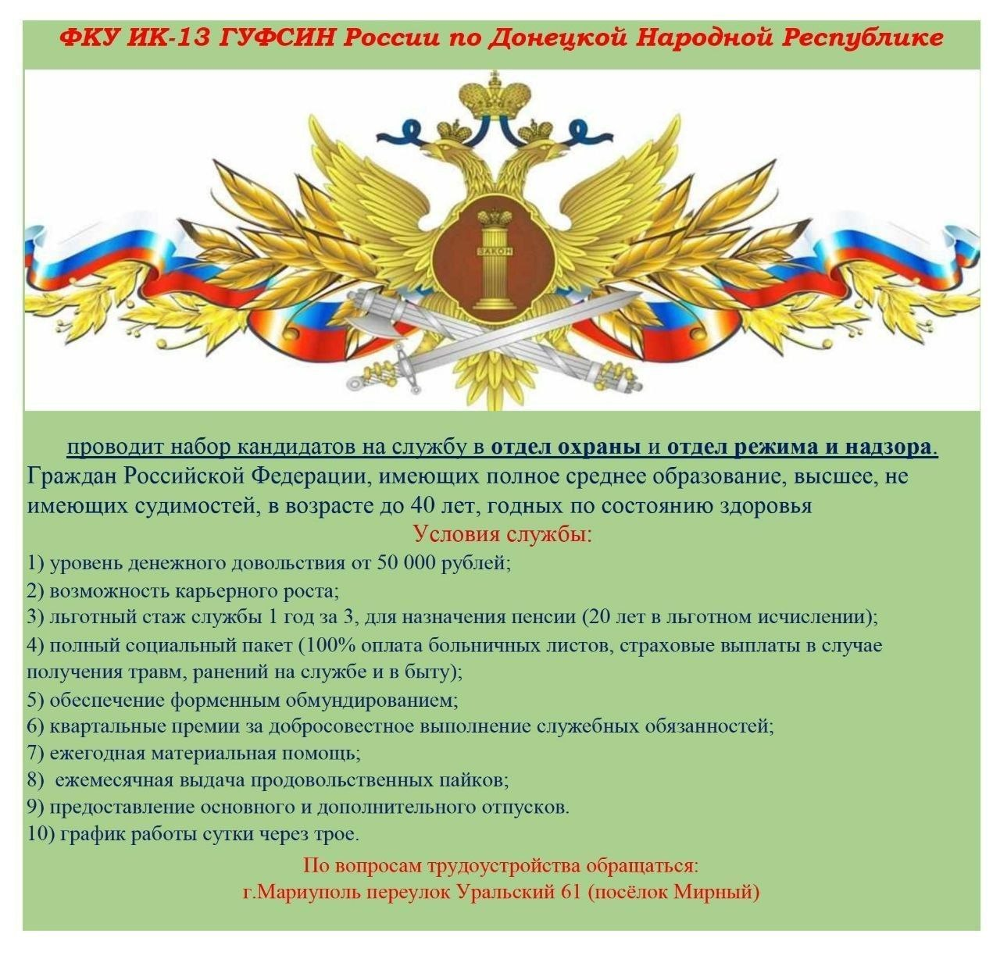
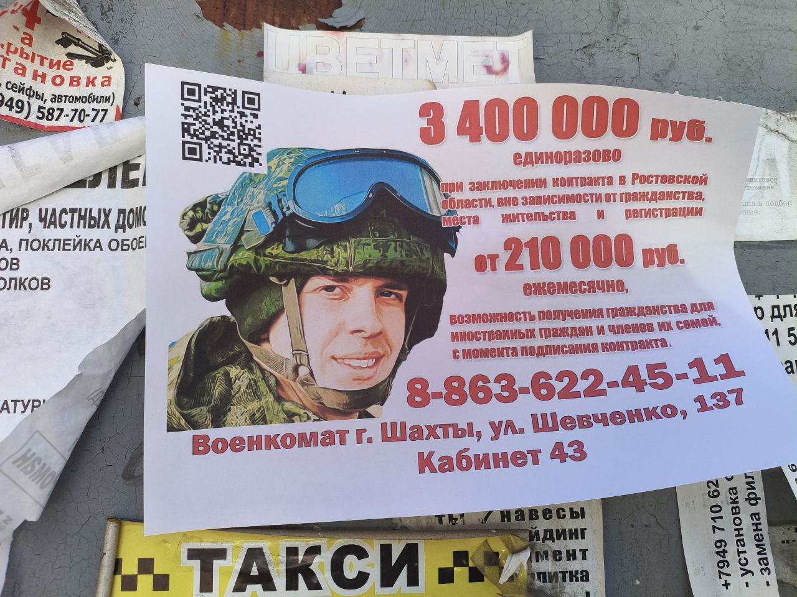
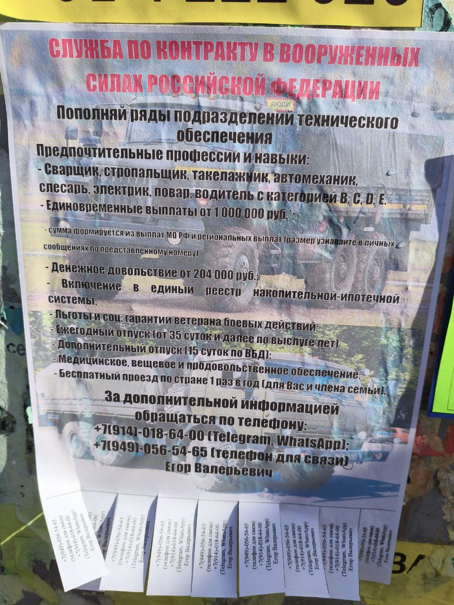
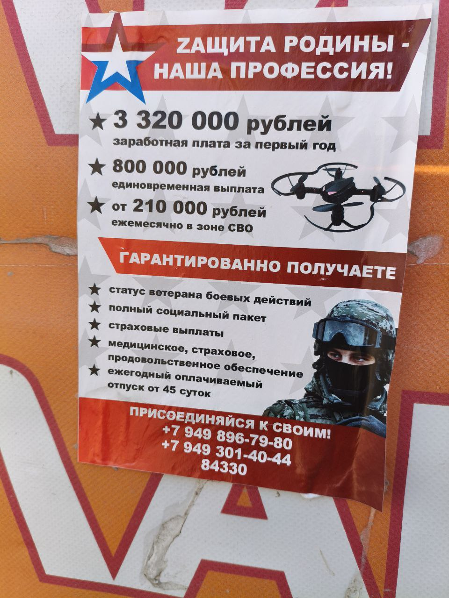
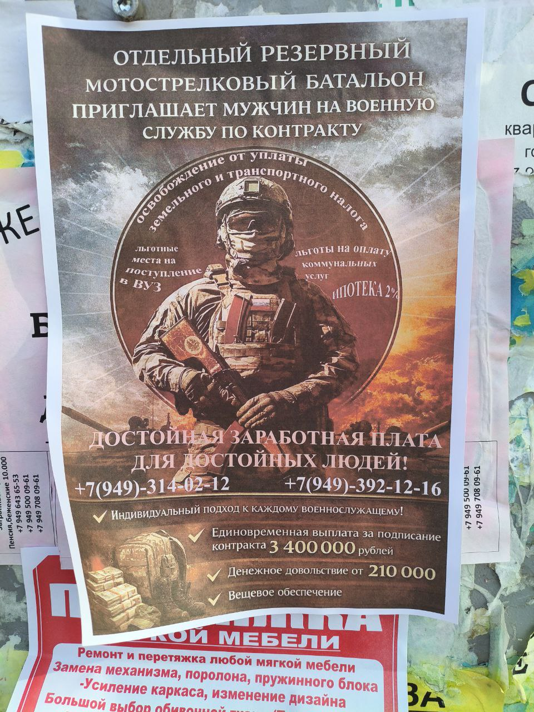
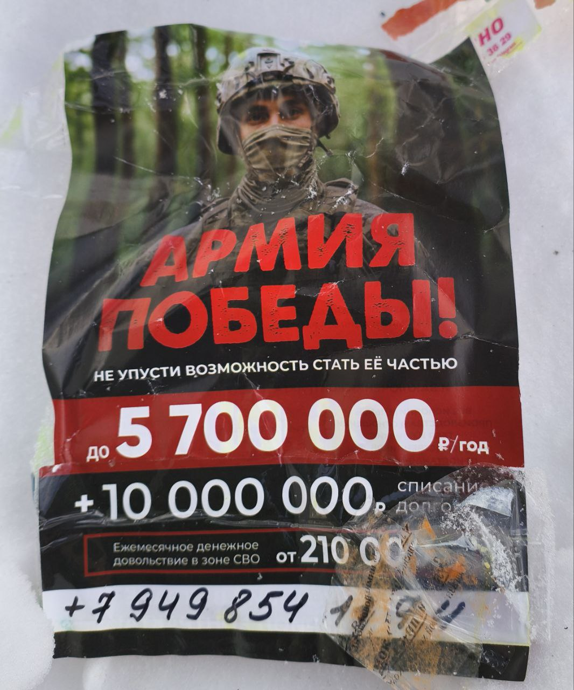
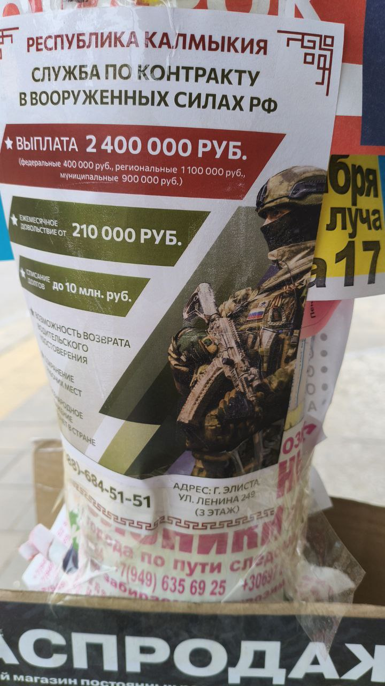

This collection of ten photographs documents Russian mobilisation-related materials in Russian-occupied Ukrainian territory, gathered across field visits between 2024 and 2026.
In Russian-occupied territories, conscription intersects with passportisation — the mass issuance of Russian Federation passports as a condition of access to services. Residents who have accepted Russian documentation acquire the obligations of Russian citizenship, including liability for military service. The photographs document the material outputs of this system: notices, administrative instruments, and related materials as encountered in the field.
The collection also includes advertising materials from Russian regions — including Yakutia — recruiting contract soldiers in Russian-occupied Ukrainian territory. These advertisements are evidence of a secondary dynamic within Russian mobilisation: regional administrations competing to attract recruits from outside their own territory in order to register them against their regional contract quota before the federal centre imposes mandatory targets. The financial packages offered vary by region and reflect the degree of pressure individual administrations are under to meet their numbers. This creates an informal market in which Russian-occupied Ukrainian territory functions as a recruitment ground for competing Russian regional mobilisation programmes.
The collection is relevant to Hub research on passportisation, administrative entrapment, and the legal architecture of occupation. It should be read alongside analytical entries on those themes and the IDP survey data (DOC-C5/C7), which directly measures awareness of mobilisation-related risk behaviours among displaced persons from Russian-occupied territories.








